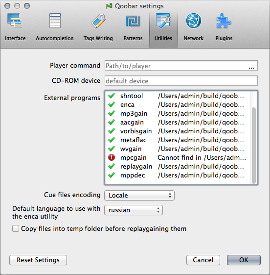

Utilities

This tab contains the settings of the external utilities.
- Player command - the external player name (with the full path optionally).
- CD-ROM device - type here the path to the CD-ROM Qoobar can read (or left this field blank if you have only one CD-ROM).
- Cue files encoding - the default encoding to use for reading cue files.
- External programs - here you can find out if all external programs are properly found by Qoobar.
- Default language to use with the enca utility - the language that enca uses to guess the encoding of the wrong written tags (f.e. when reading id3v2 tags of mp3 file that were previously saved with Windows-1251 encoding).
- Copy files into temp folder before replaygaining them - if this option is set, the files you are scanning for replaygain info will be copied to the temp directory first, processed and finally moved back.
© 2009-2015 Alex Novichkov